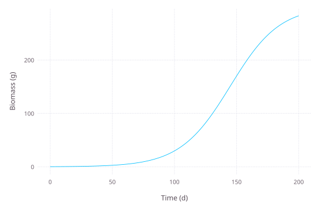
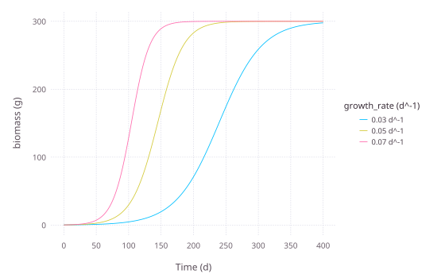

Quick Start
This tutorial follows one small model from a declaration to a graph and a comparison between scenarios. You need Cropbox installed and basic Julia syntax, but no previous Cropbox experience.
Declare a growth model
Logistic growth describes biomass that grows slowly at first, more quickly in the middle, and slowly again as it approaches a final size.
using Cropbox
@system LogisticGrowth(Controller) begin
r: growth_rate => 0.05 ~ preserve(parameter, u"d^-1")
Wf: final_biomass => 300 ~ preserve(parameter, u"g")
W0: initial_biomass => 0.25 ~ preserve(parameter, u"g")
W(W, r, Wf): biomass => r * W * (1 - W / Wf) ~ accumulate(init = W0, u"g")
endRead the declaration as follows:
r,Wf, andW0are parameters: growth rate, final biomass, and initial biomass.Wis biomass. Its equation gives a growth rate;accumulateintegrates that rate over time, starting fromW0.- Names after
:, such asbiomass, are descriptive aliases. Controllersupplies configuration and a simulation clock.
The u"..." tags declare units. Cropbox makes compatible conversions while calculating, so a rate per day can be used with a shorter simulation step.
Run and plot
Use a daily time step and simulate 200 days. The target keyword selects the output variable. Here we use the alias biomass instead of the short name W.
config = @config Clock => :step => 1u"d"
result = simulate(LogisticGrowth;
config,
stop = 200u"d",
target = :biomass,
)
visualize(result, :time, :biomass;
kind = :line,
xunit = u"d",
xlab = "Time",
ylab = "Biomass",
legend = false,
)
simulate returns a DataFrame; visualize reads its time and biomass columns. The curve approaches Wf as the growth rate slows. The graph shows time in days using xunit; that display choice does not change the clock.
To inspect the numerical output, try first(result, 3). The initialized state is included before the first daily update.
Compare growth rates
Keep the same equations and final biomass, but vary r. The group argument runs one scenario for each value and draws the results together. Extend the comparison to 400 days so the slowest scenario also approaches Wf.
visualize(LogisticGrowth, :time, :biomass;
config,
group = LogisticGrowth => :growth_rate => [0.03, 0.05, 0.07],
stop = 400u"d",
kind = :line,
xunit = u"d",
xlab = "Time",
)
A larger growth rate reaches the same biomass sooner; it does not change Wf. The plain numbers supplied for r use its declared unit, u"d^-1". Configuration can also accept explicitly unitful values. The aliases growth_rate and biomass work in configuration and output selectors; this direct model plot also uses them in its labels.
This direct plotting call is convenient for an initial comparison. The configuration guide shows how to keep all scenario results in a table for later analysis.
Continue learning
Next: Logistic Growth. Use the same equation to ask a new question: how closely does the simulated curve follow a few example measurements? You will overlay points on the curve and calculate the size of the errors.
If you want to understand how Cropbox reads a declaration, see How Cropbox Works. For an exact tag or plotting argument, use the Reference. Neither is required for the next tutorial.